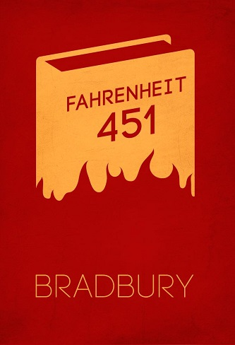
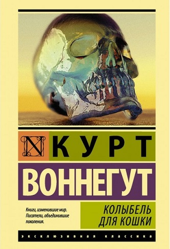
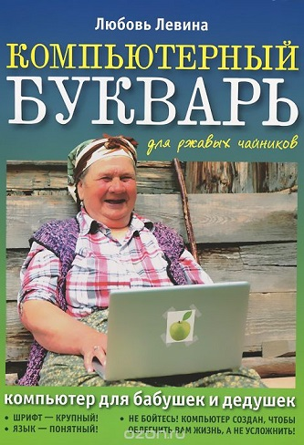

451 градус по Фаренгейту
Автор: Рэй Дуглас Брэдбери
Роман «451 градус по Фаренгейту» рассказывает об обществе, в котором литература находится под запретом, а пожарные должны сжигать все запрещённые книги, которые обнаружат, причём — вместе с жилищами владельцев. Владельцы
книг при этом подлежат аресту, одного из них даже отправляют в сумасшедший дом. Автор изобразил людей, потерявших связь друг с другом, с природой, с интеллектуальным наследием человечества. Люди спешат на работу или с работы,
никогда не говоря о том, что они думают или чувствуют, разглагольствуя лишь о бессмысленном и пустом, восторгаются только материальными ценностями. Дома они окружают себя интерактивным телевидением, проецирующимся сразу на
стены (в которые встроены кинескопы), и заполняют своё свободное время просмотром телевизионных передач, бесконечных и бестолковых сериалов. Однако «благополучное», на первый взгляд, государство находится на пороге тотальной
разрушительной войны, которой всё же суждено начаться под занавес произведения. Главный герой романа, «пожарный» Гай Монтэг, знакомится с семнадцатилетней девушкой Клариссой Маклеллан и начинает понимать, что возможна иная
жизнь. Клариссу считают странной из-за её увлечения природой, желания говорить о чувствах и мыслях и просто жить. Монтэг любит свою работу, но тайно забирает из нескольких домов книги, которые должен был сжечь. Гибель Клариссы,
которую сбивает автомобиль, встреча с женщиной, которая отказывается покинуть собственный дом, залитый керосином, и сама чиркает спичкой о перила и сжигает себя вместе с книгами, усиливает внутренний разлад Гая. Позже Гай
припомнит фамилию «Ридли», которая звучит во фразе той женщины: «Будьте мужественны, Ридли. Божьей милостью мы зажжём сегодня в Англии такую свечу, которую, я верю, им не погасить никогда» (начальник Монтэга брандмейстер Битти
объясняет Монтэгу слова старой женщины: «Человек по имени Латимер сказал это человеку, которого звали Николас Ридли, когда их сжигали на костре за ересь в Оксфорде 16 октября 1555 года»). Монтэг решает бросить свою работу после
случившегося. Он притворяется больным на сутки. Брандмейстер Битти даёт Гаю день на то, чтобы прийти в себя, говоря, что у каждого пожарного бывают такие минуты в жизни. Но после этого он намекает ему, что Монтэг должен
принести книгу, которую Монтэг украл у сгоревшей женщины и спрятал под подушку, чтобы сжечь её. Битти утверждает, что смысл уничтожения книг состоит в том, чтобы сделать всех счастливыми. Он объясняет Монтэгу, что без книг
не будет никаких противоречивых мыслей и теорий и никто не будет выделяться, становиться умней соседа. Жизнь граждан этого общества абсолютно избавлена от негативных эмоций — они только и делают что развлекаются. Даже смерть
человека «упростили» — теперь трупы умерших кремируются буквально через пять минут, чтобы никого не беспокоить. Монтэг пытается разобраться в своих мыслях, просит свою жену Милдред помочь ему в этом, начинает доставать из
тайника за вентиляционной решёткой книги и читать отрывки из них, но жена не понимает его, она в ужасе от происходящего, кричит о том, что он их погубит. Она отстраняется от него, надевая наушники, общаясь со своими
телевизионными «родственниками» и с соседками. Гай вспоминает о старике Фабере, которого он встретил год назад в парке. Старик спрятал что-то в левый карман пальто при виде Монтэга, вскочил, словно хотел сбежать, но Монтэг
остановил его, потом завёл разговор о погоде и т. д. Старик сначала испугался, но потом признался, что он — бывший профессор английского языка, осмелел, стал более словоохотлив и прочитал наизусть несколько стихотворений.
Оба избегали упоминать в разговоре о том, что Монтэг — пожарный. Фабер записал ему свой адрес на клочке бумаги: «Для вашей картотеки, — сказал старик, — на тот случай, если вы вздумаете рассердиться на меня».

Колыбель для кошки
Автор: Курт Воннегут
Рассказчик — писатель, задумавший книгу об атомной бомбе. До работы над созданием льда-девять (которая считается незаконченной) Феликс Хониккер принимал участие в создании атомного оружия. Рассказчик написал троим детям
Хониккера, попросив их прислать свои воспоминания об отце. Первым откликнулся младший сын Хониккера Ньют, который называет Феликса «отцом атомной бомбы». Хониккеру было совершенно всё равно, какую угрозу для человечества
могут представлять его исследования. Он занимался только тем, что ему интересно. Старший сын Феликса Хониккера Фрэнк считался пропавшим без вести, но неожиданно он обнаруживается в крохотной стране Сан-Лоренцо на одном
из бесплодных островов Карибского моря. Он занимает там пост министра и собирается жениться на первой красавице страны Моне Эймонс Монзано. Писатель вместе с Ньютом и Анджелой, братом и сестрой Фрэнка, отправляется в Сан-Лоренцо.
Люди в республике Сан-Лоренцо живут в чудовищной нищете. Остров никому не нужен, так как там почти ничего не растёт и нет никаких ресурсов — он успел побывать колонией нескольких держав, но колонисты без всяких конфликтов
передавали его другим и в конце концов не возражали, когда островок объявил себя независимым государством. Несколько десятилетий назад после кораблекрушения на остров были выброшены искатель приключений Лайонел Бойд Джонсон
(на местном диалекте его называют Боконон) и дезертир из морской пехоты Эрл Маккэйб. Они взяли в свои руки управление островом и попытались облегчить жизнь аборигенам. Поняв, что улучшить материальное положение жителей
Сан-Лоренцо они не в состоянии, Маккэйб и Джонсон попытались хотя бы сделать жизнь островитян более интересной и осмысленной. Они основали новую религию — боконизм (по имени Боконона), объявили эту религию запретной и сочинили
легенду о святом Бокононе, скрывающемся в джунглях от злого тирана Маккэйба. Они придумали угрозу мучительной казни на крюке за исповедование боконизма. Несмотря на распространение слухов об этом, на самом деле никого не казнили.
Боконон питался подношениями верующих, его книги распространялись с помощью переписывания. Периодически Маккэйб организовывал облаву на Боконона, и каждый раз Боконон чудом избегал смерти. Жизнь на острове превратилась в
произведение искусства. Каждый играл свою роль в спектакле, и, хотя жизнь была такой же тяжелой, островитяне уже меньше думали об этом. Все до единого жители острова стали боконистами.

Компьютерный букварь для ржавых чайников
Автор: Любовь Левина
От великого множества учебников по компьютерам этот отличается тем, что написан дилетантом и протестирован такими же дилетантами. Как показала практика, Букварь, написанный человеком, познающим компьютер в онлайн-режиме,
принес большую пользу ученикам пенсионного возраста. Автор помогает своим сверстникам, для которых тяжело сразу понять, какой кнопкой кликать - и что значит "кликать" вообще - познать азы компьютерной грамотности.
От великого множества учебников по компьютерам этот отличается тем, что написан дилетантом и протестирован такими же дилетантами. Как показала практика, Букварь, написанный человеком, познающим компьютер в онлайн-режиме,
принес большую пользу ученикам пенсионного возраста. Автор помогает своим сверстникам, для которых тяжело сразу понять, какой кнопкой кликать - и что значит "кликать" вообще - познать азы компьютерной грамотности.
От великого множества учебников по компьютерам этот отличается тем, что написан дилетантом и протестирован такими же дилетантами. Как показала практика, Букварь, написанный человеком, познающим компьютер в онлайн-режиме,
принес большую пользу ученикам пенсионного возраста. Автор помогает своим сверстникам, для которых тяжело сразу понять, какой кнопкой кликать - и что значит "кликать" вообще - познать азы компьютерной грамотности.
От великого множества учебников по компьютерам этот отличается тем, что написан дилетантом и протестирован такими же дилетантами. Как показала практика, Букварь, написанный человеком, познающим компьютер в онлайн-режиме,
принес большую пользу ученикам пенсионного возраста. Автор помогает своим сверстникам, для которых тяжело сразу понять, какой кнопкой кликать - и что значит "кликать" вообще - познать азы компьютерной грамотности.
От великого множества учебников по компьютерам этот отличается тем, что написан дилетантом и протестирован такими же дилетантами. Как показала практика, Букварь, написанный человеком, познающим компьютер в онлайн-режиме,
принес большую пользу ученикам пенсионного возраста. Автор помогает своим сверстникам, для которых тяжело сразу понять, какой кнопкой кликать - и что значит "кликать" вообще - познать азы компьютерной грамотности.